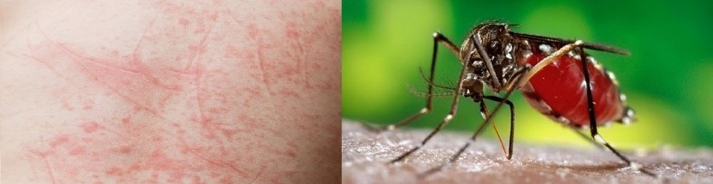
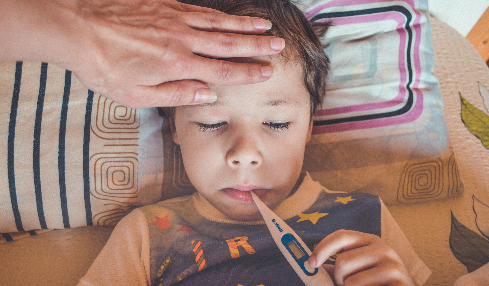

.png)
Sốt xuất huyết là gì ?
Sốt xuất huyết là bệnh truyền nhiễm do vi rút Dengue gây ra, bệnh do muỗi Aedes aegypti hay còn gọi là muỗi vằn truyền nhiễm cho người. Bệnh có thể diễn tiến đến các biến chứng nguy hiểm và thậm chí tử vong. Hiện sốt xuất huyết là bệnh chưa có vắc-xin phòng ngừa và thuốc điều trị đặc hiệu.
Sốt xuất huyết DenGue là bệnh truyền nhiễm gây dịch do vi rút Dengue gây ra. Vi rút Dengue có 4 tuýp huyết thanh là DEN-1, DEN-2, DEN-3 và DEN-4. Vi rút truyền từ người bệnh sang người lành do muỗi đốt. Muỗi Aedes aegypti là côn trùng trung gian truyền bệnh chủ yếu. Đặc điểm của Sốt xuất huyết DenGue là sốt, xuất huyết và thoát huyết tương, có thể dẫn đến sốc giảm thể tích tuần hoàn, rối loạn đông máu, suy tạng, nếu không được chẩn đoán sớm và xử trí kịp thời dễ dẫn đến tử vong.
Có thể nói Dengue là một bệnh do virus lây truyền do muỗi thường gặp nhất ở người. Trong những năm gần đây bệnh đã trở thành mối quan ngại lớn đối với sức khỏe cộng đồng trên bình diện quốc tế. Trên toàn thế giới có khoảng 2,5 tỷ người hiện đang sống trong vùng có lưu hành bệnh. Sự lan tràn về mặt địa lý của cả véc tơ truyền bệnh (muỗi) và virus đã đưa đến sự tăng cao tỷ lệ bệnh trong vòng 25 năm qua cũng như khả năng xuất hiện dịch do nhiều chủng huyết thanh khác nhau ở các đô thị trong vùng nhiệt đới.
1. Bệnh xảy ra ở đâu?Sốt xuất huyết chủ yếu lây truyền qua muỗi Aedes aegypti và thường phân bố ở các quốc gia vùng nhiệt đới. Dịch bệnh Sốt xuất huyết có thể xảy ra bất cứ khi nào. Tuy nhiên, độ ẩm và nhiệt độ cao là điều kiện thuận lợi cho sự sinh sôi, phát triển của muỗi, làm tăng khả năng lây truyền bệnh. Tại Việt Nam, bệnh xảy ra quanh năm, thường gia tăng vào mùa mưa. Bệnh gặp ở cả trẻ em và người lớn.
Tỉ lệ mắc bệnh trên toàn thế giới đã gia tăng mạnh mẽ trong những năm gần đây. Bệnh này hiện đã trở thành dịch tại trên 100 quốc gia ở châu Phi, châu Mỹ, khu vực phía Đông Địa Trung Hải, Đông Nam Á và Tây Thái Bình Dương. Đông Nam Á và Tây Thái Bình Dương là khu vực chịu ảnh hưởng nặng nề nhất. Trước năm 1970, chỉ có 9 quốc gia có dịch lưu hành. Con số này tăng lên gấp hơn 4 lần vào năm 1995. Tổ chức Y tế Thế giới (WHO) ước tính mỗi năm có khoảng 50 đến 100 triệu người mắc bệnh. Không chỉ có số trường hợp mắc bệnh gia tăng mà khả năng nhiễm nhiều loại virus khác nhau cũng ngày càng đáng báo động. Sau đây là một vài con số thống kê khác :
2. NGUYÊN NHÂN MẮC BỆNH SỐT XUẤT HUYẾT.
Người nhiễm virus DenGue do muỗi cái thuộc chi Aedes đốt. Muỗi Aedes aegypti là véc tơ truyền bệnh chủ yếu ở hầu hết các khu vực bệnh lưu hành. Muỗi Aedes aegypti hoạt động vào ban ngày và chỉ có muỗi cái mới đốt người và truyền bệnh. Khi muỗi cái Aedes hút máu bệnh nhân nhiễm virus dengue, virus này sẽ ủ bệnh trong cơ thể muỗi khoảng 8 đến 11 ngày. Trong khoảng thời gian sống còn lại sau đó, muỗi có nguy cơ truyền bệnh cho người. Khi virus vào cơ thể người, chúng tuần hoàn trong máu từ 2 đến 7 ngày. Trong khoảng thời gian này nếu muỗi Aedes hút máu thì virus được truyền cho muỗi.
3. Bệnh sốt xuất huyết nguy hiểm như thế nào?Cho đến nay, sốt xuất huyết chưa có thuốc điều trị đặc hiệu và chưa có vắc xin phòng bệnh. Bệnh thường gây dịch lớn với nhiều người mắc cùng một lúc khiến công tác điều trị hết sức khó khăn, có thể gây tử vong, đặc biệt là với trẻ em, gây thiệt hại lớn về kinh tế, xã hội. Hơn 85% các ca mắc sốt xuất huyết dengue và 90% trường hợp tử vong xảy ra ở các tỉnh phía Nam Việt Nam. Trong đó, 90% các ca tử vong do sốt xuất huyết là dưới 15 tuổi. Bệnh sốt xuất huyết do virus DenGue gây ra với 4 tuýp, ký hiệu là D1, D2, D3, D4. Cả 4 tuýp virus này đều có khả năng gây bệnh ở Việt Nam và luân phiên gây ra dịch bệnh. Miễn dịch được tạo thành sau khi mắc bệnh chỉ đặc hiệu đối với từng tuýp riêng lẻ, vì vậy có thể hiểu rằng: một người có thể mắc sốt xuất huyết 4 lần trong đời với 4 tuýp virus khác nhau.
4. Hướng dẫn phòng bệnh.
- Tránh muỗi đốt: Ngủ màn, không để trẻ chơi ở chỗ tối, thoa kem chống muỗi.
- Diệt muỗi và loăng quăng: nhà cửa luôn thoáng mát, sạch sẽ ngăn nắp. Không để các dụng cụ chứa nước hoặc nếu có phải đậy nắp và thường xuyên thay rửa, loại bỏ các ổ nước đọng.
- Ngoài những hướng dẫn trên, bạn hãy lưu ý luôn theo dõi sát thân nhiệt, báo ngay cho bác sĩ nếu nhận thấy dấu hiệu sốt lên, tuyệt đối không tự ý dùng thuốc chưa có sự chỉ định của bác sĩ.
Khoa nhi tại hệ thống Bệnh viện Đa khoa Quốc tế Vinmec là địa chỉ tiếp nhận và thăm khám các bệnh lý mà trẻ sơ sinh cũng như trẻ nhỏ dễ mắc phải: Sốt virus, sốt vi khuẩn, viêm tai giữa, viêm phổi ở trẻ,....Với trang thiết bị hiện đại, không gian vô trùng, giảm thiểu tối đa tác động cũng như nguy cơ lây lan bệnh. Cùng với đó là sự tận tâm từ các bác sĩ giàu kinh nghiệm chuyên môn với các bệnh nhi, giúp việc thăm khám không còn là nỗi trăn trở của các bậc cha mẹ.
Dấu hiệu
1. Phân loại các mức độ của sốt xuất huyết.Bệnh sốt xuất huyết được chia làm 3 mức độ (Theo Tổ chức Y tế Thế - WHO năm 2009):
- Sốt xuất huyết Dengue.
- Sốt xuất huyết Dengue có dấu hiệu cảnh báo.
- Sốt xuất huyết Dengue nặng (Sốc sốt xuất huyết Dengue).
Bệnh sốt xuất huyết có biểu hiện khá đa dạng, diễn biến nhanh chóng từ nhẹ đến nặng. Bệnh thường khởi phát đột ngột và diễn biến qua 3 giai đoạn: giai đoạn sốt, giai đoạn nguy hiểm và giai đoạn hồi phục. Cần lưu ý giai đoạn sốt tương ứng với thể bệnh sốt xuất huyết Dengue thông thường, nếu đã chuyển qua giai đoạn nguy hiểm tức là đã chuyển qua mức độ của thể bệnh sốt xuất huyết có dấu hiệu cảnh báo và sốt xuất huyết Dengue nặng. Khi đó cần phải cho bệnh nhân nhập viện ngay vì có thể dẫn đến các biến chứng nguy hiểm. Phát hiện sớm bệnh và hiểu rõ những vấn đề lâm sàng trong từng giai đoạn của bệnh sẽ giúp chẩn đoán sớm, điều trị đúng và kịp thời, nhằm cứu sống người bệnh.
Giai đoạn sốt.Giai đoạn sốt sẽ xuất hiện sau thời gian ủ bệnh, kéo dài từ 4 đến 10 ngày sau khi bị muỗi mang mầm bệnh đốt.
- Bệnh nhân có dấu hiệu sốt cao đột ngột, liên tục 39 - 40 độ C, kéo dài 2 - 7 ngày, khó hạ sốt.
- Đau đầu dữ dội ở vùng trán, nhức hai hố mắt sau nhãn cầu.
- Có thể có nổi mẩn, phát ban, da xung huyết.
- Chán ăn, buồn nôn.
- Đau cơ, đau khớp.
- Nghiệm pháp dây thắt dương tính.

Sốt cao khó hạ là triệu chứng điển hình của sốt xuất huyết
Giai đoạn nguy hiểm.Thường vào ngày thứ 3 - 7 của bệnh, người bệnh có thể còn sốt hoặc đã giảm sốt. Nhiệt độ giảm không nhất thiết có nghĩa là người bệnh đang hồi phục, ngược lại cần phải đặc biệt theo dõi biểu hiện của sốt xuất huyết dengue có dấu hiệu cảnh báo và tiến triển thành sốt xuất huyết Dengue nặng.
- Thoát huyết tương do tăng tính thấm thành mạch (thường kéo dài 24 - 48 giờ); tràn dịch màng phổi, mô kẽ, màng bụng, nề mi mắt, gan to, có thể đau. Nếu thoát huyết tương nhiều sẽ dẫn đến sốc với các biểu hiện vật vã, bứt rứt hoặc li bì, lạnh đầu chi, da lạnh ẩm, mạch nhanh nhỏ, huyết áp kẹt (hiệu số huyết áp tối đa và tối thiểu ≤ 25 mmHg), tụt huyết áp hoặc không đo được huyết áp, tiểu ít.
- Xuất huyết: Xuất huyết dưới da, nốt xuất huyết rải rác hoặc chấm xuất huyết, thường ở mặt trước hai cẳng chân và mặt trong hai cánh tay, bụng, đùi, mạng sườn hoặc mảng bầm tím. Xuất huyết ở niêm mạc: Chảy máu mũi, lợi, tiểu ra máu. Kinh nguyệt kéo dài hoặc xuất hiện kinh sớm hơn kỳ hạn. Xuất huyết nội tạng như: Tiêu hóa, phổi, não là biểu hiện nặng (nôn/ói ra máu, đi cầu phân đen do bị xuất huyết nội tạng).
- Một số trường hợp sốt xuất huyết dấu hiệu nặng có thể có biểu hiện suy tạng như: viêm gan nặng, viêm não, viêm cơ tim. Những biểu hiện nặng này có thể xảy ra ở người bệnh không có dấu hiệu thoát huyết tương rõ hoặc không sốc.
- Đau bụng, buồn nôn, tay chân lạnh, vật vã hốt hoảng (đây là hội chứng choáng do xuất huyết nội tạng gây mất máu và tụt huyết áp), cần phải cấp cứu nhanh chóng.
Khoảng 24 - 48 giờ sau giai đoạn nguy hiểm, cơ thể bệnh nhân có hiện tượng tái hấp thu dần dịch từ mô kẽ vào bên trong lòng mạch, giai đoạn này sẽ kéo dài trong khoảng 48 - 72 giờ.
- Bệnh nhân hết sốt, tổng trạng tốt lên, thèm ăn uống trở lại, huyết động ổn định và đi tiểu nhiều.
- Có thể có nhịp tim chậm và thay đổi về điện tâm đồ.
- Trong giai đoạn này, nếu truyền dịch quá mức cho bệnh nhân có thể gây ra phù phổi hoặc suy tim.
Hình ảnh muỗi vằn
Nên làm và Không nên làm
NÊN LÀM
- Dùng thuốc hạ nhiệt theo chỉ định của bác sĩ.
- Đến trung tâm y tế gần nhất.
KHÔNG NÊN LÀM
- Không tự ý dùng thuốc hạ sốt.
- Không ăn trứng khi bị sốt xuất huyết.
- Hạn chế muỗi tiếp xúc với da.
Nên ăn và không nên ăn
NÊN ĂN
- Ăn một số đồ nhẹ, dễ nuốt, dễ tiêu hóa.
- Bù nước cho cơ thể liên tục.
- Ăn hoa quả và rau.
KHÔNG NÊN ĂN
- Không ăn các thực phẩm có màu đen, nâu, đỏ.
- Không ăn đồ cay nóng.
- Không ăn uống đồ ngọt.
- Không ăn thực phẩm nhiều dầu mỡ.
- Không uống trà đặc, cà phê, hút thuốc, uống rượu.
Cách ly triệt để, triển khai cao điểm rà soát tất cả người nhập cảnh. Ngày 04/05/2021
Phó Thủ tướng Vũ Đức Đam yêu cầu, phải cách ly triệt để, không được để lây nhiễm trong khu cách ly, từ khu cách ly ra cộng đồng...
Cập nhật dịch Covid-19 ngày 22-5: 20 ca mới, hơn một nửa ở Bắc Giang. Ngày 22-05-2021
Sáng 22-5, cả nước ghi nhận có thêm 20 ca mắc Covid-19 mới, trong đó hơn một nửa là ở Bắc Giang. Tuy nhiên có thể thấy, tốc độ tăng...
11 mẫu xét nghiệm SARS-CoV-2 tại các ổ dịch Đà Nẵng là chủng virus Anh. Ngày 19-05-2021
Đó là thông tin được bác sĩ Tôn Thất Thạnh, Giám đốc Trung tâm Kiểm soát bệnh tật (CDC) TP Đà Nẵng đưa ra tại cuộc họp Ban Chỉ đạo...
Thêm bốn ca nhiễm Covid-19, TP Hải Dương phát thông báo khẩn số 5. Ngày 20-05-2021
Đêm 19-5, Ban Chỉ đạo phòng, chống dịch Covid-19 TP Hải Dương cho biết đã ghi nhận thêm bốn trường hợp dương tính với virus SARS-CoV-2...